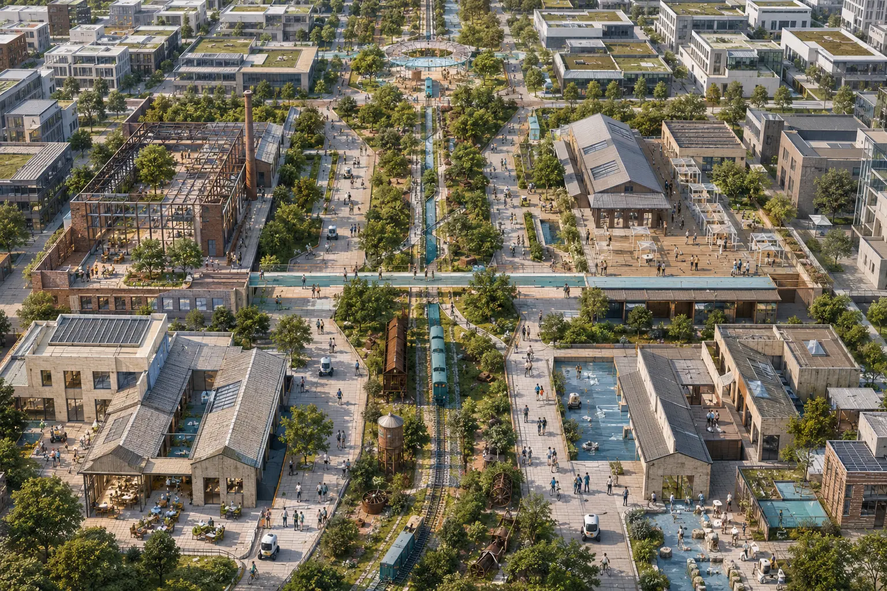

模型评测、机器人共测、可信治理、清河公共展示界面。

AI 生成概念封面 · 仅用于表达方案氛围 · 不是现状证据、官方效果图或建设承诺
自检状态 / PROVISIONAL
当前使用仓库临时粗略边界，只适合开放征集、生成、自检与设计讨论；不得作为官方红线、精确面积、法定规划或工程实施依据。正式 polygon 发布后整包复算。
总览地图 · 三层范围
43.6 km²
统筹研究：产业与区域协同
统筹研究：产业与区域协同
→
11.4 km²
总体设计：空间与更新
总体设计：空间与更新
→
368.4 ha
重点区域：三栈原型
重点区域：三栈原型
geometry/site_boundary.geojson · geometry/key_areas.geojson · provisional_constraint
重点区域 · 用地分区
成果门廊、开源工坊、孵化小试、人才生活客厅。
企业服务、智能终端、城市消费、轨道接驳与夜间界面。
geometry/land_use.geojson · geometry/buildings.geojson
交通慢行 · 蓝绿公共空间
串联百年铁路、开源成果和公共验证节点。
连接高校、园区、社区与轨道站，先共测断点再深化工程。
低速机器人、无障碍、导览和公共服务采用预约与人工值守。
geometry/roads.geojson · geometry/green_space.geojson · geometry/public_space.geojson
建筑 · 更新项目
不对应现状建筑与地块，只测试首层开放界面和服务类型。
先数据与运营、后可逆空间、再进入固定建设专业论证。
分期是优先序，不构成资金、审批、开工或政府安排承诺。
geometry/buildings.geojson · geometry/phasing.geojson
AI 场景
授权测试集 + 专家结论
预约 + 安全员 + 急停
设备级数据 + 专项复核
公众上报 + 人工踏勘
不诊断 + 转人工
未成年人保护
不读取商业秘密
许可与风险同步展示
史料人工校核
主动开启不追踪
明示机器身份
脱敏事件人工复盘
核心指标
site_area_sqm11.41 km²
green_ratio32.6%
public_space_ratio2.9%
AI interfaces12
任务覆盖
公告 1.3、1.4、1.5 与 agent.1-agent.6 已映射到正文、GeoJSON、metrics、图纸和本页。专业标准和设计深度分别由 standard_matrix.json 与 design_depth_matrix.json 追踪。
来源
官方公告、清权任务书、本地标准快照和七个案例机构一手页面均登记于 sources.json。外部案例只支撑机制启发，不支撑空间控制结论。
假设
官方边界、控规、道路红线、文保、权属、市政、消防和现状建筑资料均待补；影响见 assumptions.json 与 proposal.md。